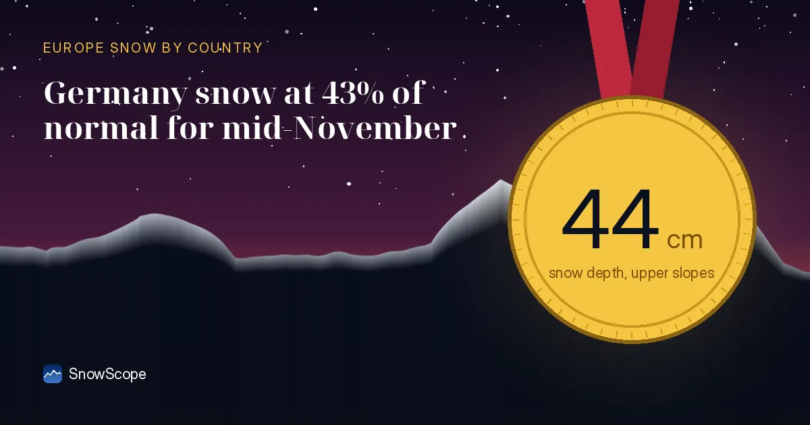

Germany snow at 43% of normal for mid-November
Germany's ski mountains are running 57% short of their usual November snow pack. Our model shows the five main resorts at median 43 percent of normal depth, a shortfall that will take several storms to fill.
See the live snow forecast for Zugspitze in the SnowScope appSnow depth, powder alerts and the 3D map, free.
The shortfall
Mid-November normally delivers decent snow to the German Alps, but this year is lagging significantly. Our model shows Zugspitze's weather station at 12 cm on 16 November, 7 cm below the typical 19 cm for this date. Across the five resorts we regularly track, the median depth is 43 percent of their seasonal average. This is not unusual for early November (snow can be patchy and thin), but we are well past the first week of the month now.
Germany's high peaks have snow, yes, but not enough of it yet. Our models are confident in this reading; we have good satellite coverage and the numbers match the patterns we see on the ground.
| Resort | Today | Normal for the date | Share of normal |
|---|---|---|---|
| Zugspitze | 12 cm | 19 cm | 63 % |
| Fellhorn/Kanzelwand | 3 cm | 7 cm | 43 % |
| Grasgehren | 3 cm | 11 cm | 27 % |
| Hörnerbahn Bolsterlang | 2 cm | 7 cm | 29 % |
| Söllereck | 4 cm | 4 cm | 100 % |

What November usually looks like
Historical data tells us what a normal 16 November brings. Zugspitze normally carries 19 cm, though it has seen 40 cm in strong years. Fellhorn/Kanzelwand typically holds 7 cm but can reach 28 cm. Grasgehren aims for 11 cm (high of 34 cm). The lower resorts, around 4-7 cm typical, can build to 20-27 cm in good seasons.
This year, all are well under those values. Only Söllereck matches its norm exactly at 4 cm, lucky to have caught an early dusting; the others missed out on early November snow that often accumulates in past winters.
The rescue forecast
Better news arrives within days. The next three days should add 5 cm, with a marked peak on 21 November (15 cm expected). The seven-day outlook climbs to 31 cm total, most of it stacked into the final week covered by our forecast.
The Allgäu Alps will lead the charge, pulling perhaps 7 cm in 72 hours, while the Bavarian Alps accumulate around 4 cm. If this forecast verifies (and early forecasts can shift, so watch for updates), Germany's resorts should climb to or above normal by late November, finally joining the season.
Snow lives at altitude
Elevation is everything right now. Our model estimates that above 2000 m, the landscape is entirely white with average 13 cm depth. The 1500-2000 m band shows near-total coverage at 93 percent with 4 cm average - mostly skiable. Drop to 1000-1500 m and coverage plummets to 37 percent with just 1 cm average - spotty.
Below 1000 m, there is almost no snow. The snow line sits at 1200 m, so low-altitude resorts need patience until the late-November dumps arrive. High west-facing slopes above 2000 m are your best bet this week.
The depth leaders
Zugspitze tops the list at 44 cm (modelled at resort altitude of 2627 m), though this overstates the skiable base at mid-mountain. Fellhorn/Kanzelwand has 26 cm and captured 7 cm in the past three days, suggesting it caught some recent activity. Grasgehren, Hörnerbahn Bolsterlang, and Söllereck cluster around 22-25 cm.
None offer a deep or forgiving base for early-season skiers, but all will deepen as the week progresses.
The regional picture
Germany is trailing its Alpine neighbors significantly. Austria displays 38 percent snow cover nationwide and leads with Kaprun at 83 cm - a full metre-plus of advantage. Switzerland is whiter still at 53 percent cover, with Ovronnaz holding 136 cm.
Only 67 of Germany's 230 resorts report any snow on the ground - most of the lower mountains are bare. This is a north-Alpine story; the higher southern chains have built snow faster this autumn.
Tips for skiers
- Watch the Allgäu Alps and Bavarian Alps closely over the next 72 hours; this is where the best fresh snow will arrive.
- Zugspitze and west-facing slopes above 2000 m offer the most reliable snow cover now; lower altitudes are thin.
- Many lower resorts will not be fully skiable until late November; check the depth forecast for your preferred area before travelling.
- Mark 21 November on your calendar - the forecast peak should shift conditions significantly.
- Early-season snow can be thin and rocks may show through dark patches; stick to groomed runs and check the official avalanche bulletin before going off-piste.
About these numbers
Resort snow depths are the deepest snow on the resort's upper slopes from the SnowScope snow model (about 1 km, run of 16 November); they are estimates for an area, not a measurement at one point. Station values are measurements on the date shown. Forecasts can change. Always read the official avalanche bulletin before going off-piste.
Cite this report
For research, teaching or the press: the numbers and charts are free to reuse under CC BY 4.0 with this citation.
SnowScope (2026), Germany snow at 43% of normal for mid-November, https://snowscope.app/blog/en/2026/11/germany-snow-report-16-november-2026.html, accessed 2026-11-16
SnowScope (Atlas Labs). (2026, November 16). Germany snow at 43% of normal for mid-November. SnowScope snow reports. https://snowscope.app/blog/en/2026/11/germany-snow-report-16-november-2026.html
BibTeX
@misc{snowscope2026germanysnowreport16novem,
author = {{SnowScope (Atlas Labs)}},
title = {Germany snow at 43% of normal for mid-November},
year = {2026},
month = nov,
howpublished = {\url{https://snowscope.app/blog/en/2026/11/germany-snow-report-16-november-2026.html}},
note = {Published 2026-11-16 20:42 UTC; accessed 2026-11-16}
}· CC BY 4.0 · Methods, data and tools →
Zugspitze: snow and temperature by height, this winter vs last (tools) →
Follow Zugspitze
Free: a message when fresh snow is coming, and the forecast every morning.
More snow reports

Alpental snow forecast for 13 November 2026: about 1 in on the upper mountain, rain almost to the summit this weekend with a snow level near 5,400 to 5,600 ft, then 4 to 5 in of mixed rain and snow up top next week.

Glacier skiing from 68 EUR a day: we compared seven glaciers in France, Austria, Germany and Switzerland by price and by the snow they usually hold in December.